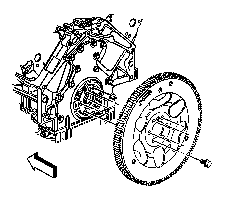
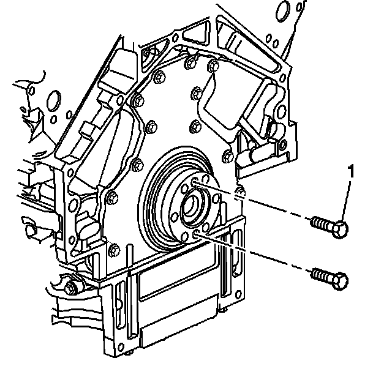
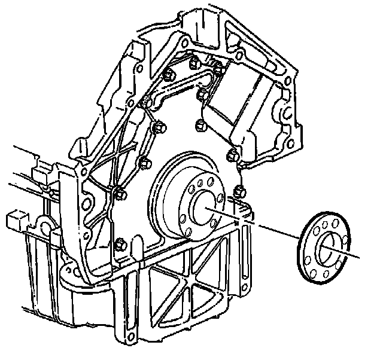

Flex Plate: Service and Repair
Automatic Transmission Flex Plate Replacement
Removal Procedure

1. Remove the automatic transmission.
Important: Note the position and direction of the engine flywheel before removal.
2. Remove the flywheel bolts.
3. Remove the flywheel.

4. Install two M11x1.5 mm bolts (1) to the threaded holes of the spacer, if applicable.
5. Rotate the bolts clockwise to remove the spacer.

6. Remove the spacer from the rear of the crankshaft, if applicable.
Installation Procedure
Important:
^ The flywheel does not use a locating pin for alignment and will not initially seat against the crankshaft flange or spacer, if applicable, but will be pulled onto the crankshaft by the engine flywheel bolts. This procedure requires a three stage tightening process.
^ Certain applications (6.0L) require a spacer and longer bolts for proper flywheel position.
1. Install the spacer, if applicable, onto the rear of the crankshaft.
Important: Longer flywheel bolts must be used on applications using a flywheel spacer.
2. Install the flywheel and bolts to the crankshaft.
3. Apply threadlock to the threads of the flywheel bolts. Refer to Sealers, Adhesives, and Lubricants for the correct part number.

Notice: Refer to Fastener Notice.
4. Tighten the flywheel bolts.
1. Tighten the bolts (1-6) a first pass in sequence to 20 N.m (15 lb ft).
2. Tighten the bolts (1-6) a second pass in sequence to 50 N.m (37 lb ft).
3. Tighten the bolts (1-6) a final pass in sequence to 100 N.m (74 lb ft).
5. Install the automatic transmission.